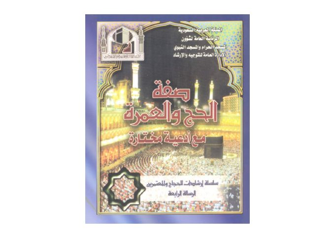

Downloads need an internet connection.
صفة الحج والعمرة مع أدعية مختارة
Authors: محمد بن صالح العثيمين
Publishers: الرئاسة العامة لشؤون المسجد الحرام والمسجد النبوي
▫️ العنوان: صفة الحج والعمرة مع أدعية مختارة ▪️ المؤلف: #محمد_بن_صالح_العثيمين ▫️ الناشر: #الرئاسة_العامة_لشؤون_المسجد_الحرام_والمسجد_النبوي ▪️ تاريخ النشر: 1429هـ 2008م ▫️ بلد النشر: مكة المكرمة، #السعودية ▪️ الطبعة: 9 ▫️ عدد الأجزاء: 1 ▪️ الصفحات: 49 ▫️ نوع الوعاء: #كتاب ▪️ التصنيف الرئيسي: #الفقه_وأصوله ۪